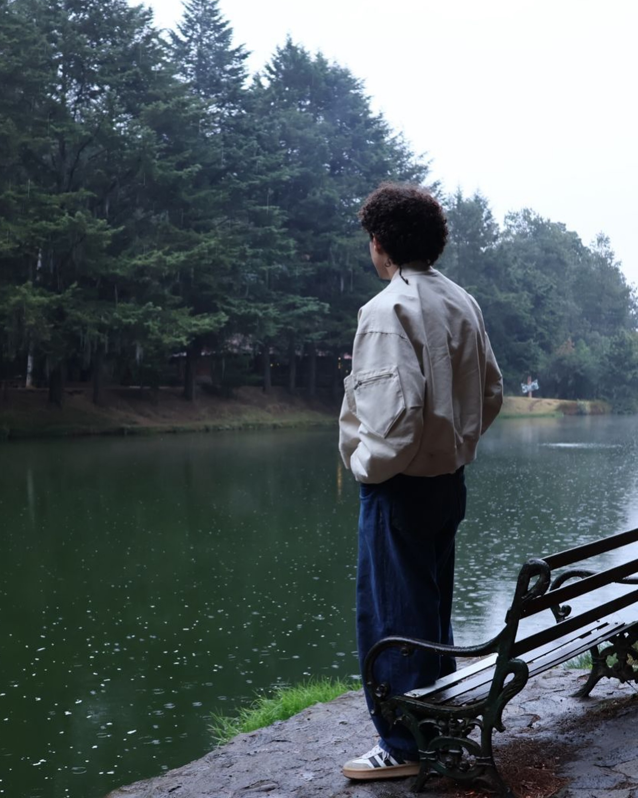
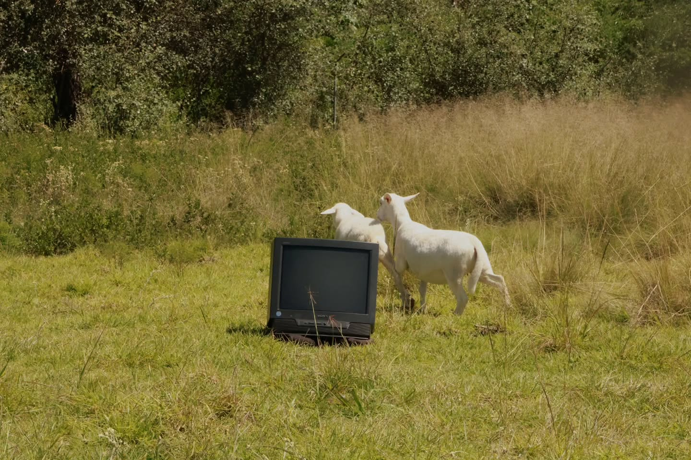
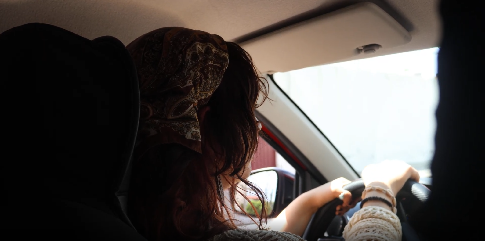
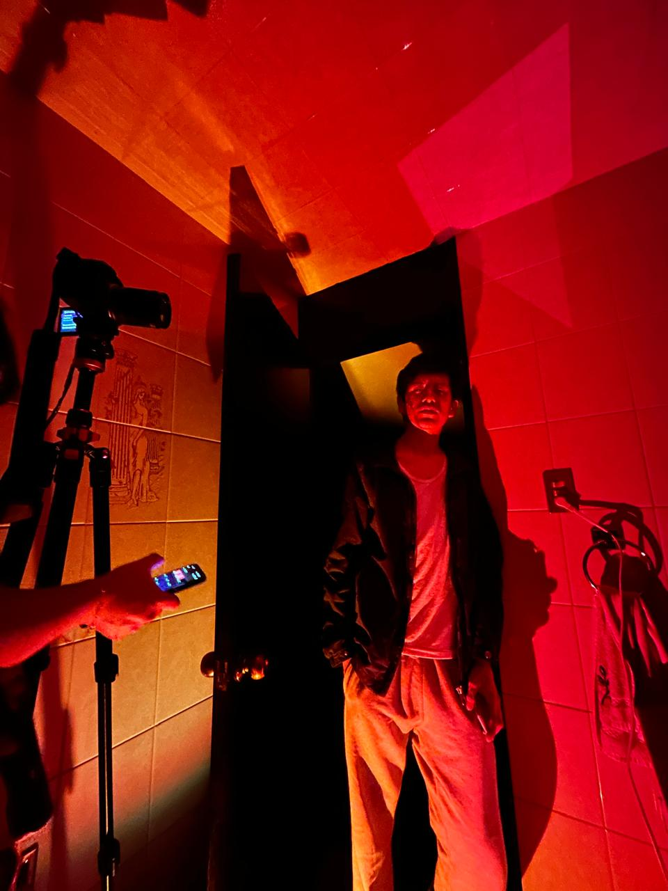
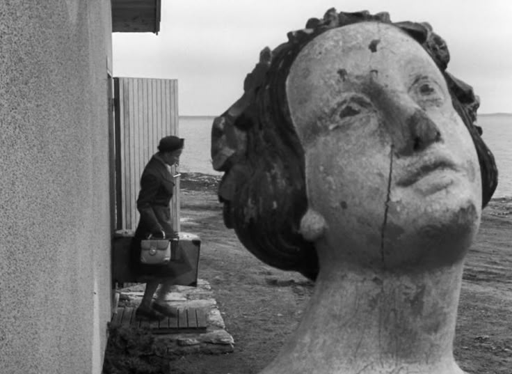

Productora audiovisual en Puebla. Creamos cortometrajes, videos musicales y visuales para tus proyectos. Desde 2025.
PROYECTOS
PRO2026
Video musical hecho en colaboración con el colectivo de CINCOCIONCOVEINTITRES. Nuestro primer video musical para el artista Santitart, grabado en Apapaxco en el 2026. Dirigido por PAKO.

2026
Visualizer hecho para TÁNTALO, canción de SANTITART parte de su siguiente proyecto "SIGO AQUÍ". Dirigo por PAKO.

2026
Cortometraje drama/comedia grabado en la ciudad de Puebla. La historia de 2 amigas en un viaje, con giros inesperados en la cotidianidad del día. Dirigo por PAKO.

2026
Cortometraje de terror, una habitación, una pesadilla, y la mente distorsionada de una gran culpa. Dirigido por PAKO.

2027
Sinopsis en proceso. Nuestro próximo gran proyecto ;). Escrito y dirigido por PAKO.
contacto@rancho.mov